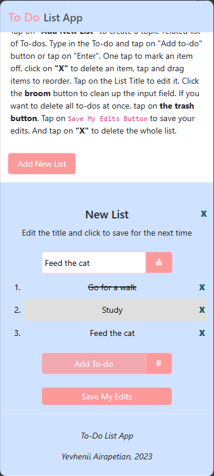
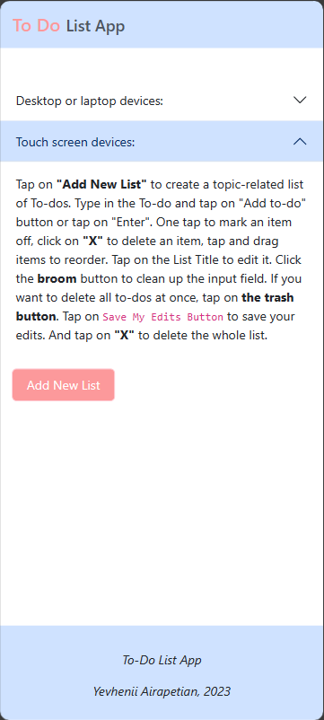
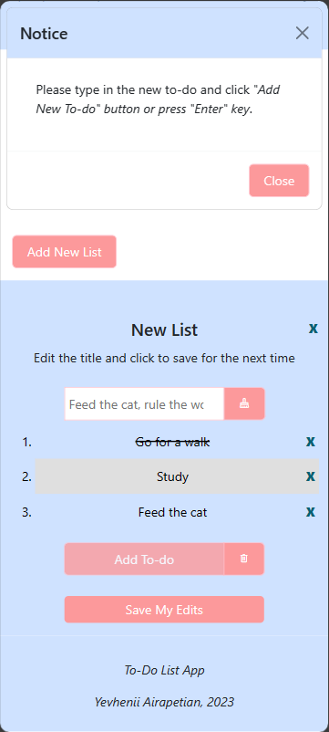

Click on the image and hold to zoom in.

To-Do-List App is a responsive web application, developed using HTML, Bootstrap, and Javascript and provides users with the ability to manage their to-dos. Users can add and delete their to-dos among other features.
To-Do-List App was a required side mini-project I developed as part of my full-stack immersion course at CareerFoundry to demonstrate my mastery of working with jQuery.
The project aimed to design a fully-functioning web app that I could add to my professional portfolio. The problem I wanted to solve was to turn plain Javascript into jQuery.
After receiving the initial plain Javascript code with basic app functionality, I started turning it into a jQuery one. This type of work allowed me to introduce additional features and styles.
Click on the image and hold to zoom in.
  1 day
The development of the app's basic features didn't create any difficulties and I finished the task within 1 day. However, I wasn't satisfied with the functionality it had and decided to find extra time to add improvements. These additions caused a lot of debugging because different jQuery libraries didn't function well together and as I planned them to. Thankfully, my mentor and tutor helped me to troubleshoot the work. Before introducing extra functions, the app could:
With the new features, it allows to:
The To-Do-List App was only a side mini-project I did in the full-stack immersion course but I enjoyed adding new features and styling to it above the basic requirements. It quickly enhanced my skills in jQuery, Bootstrap, debugging, and working with additional libraries.
Responsive design
Javascript
Bootstrap
CSS3
HTML5
jQuery
Deploying a website
Role:
Lead Developer
Tonny Ntambaazi:
Creative
Director
Nizar Triki:
Software Engineering Manager